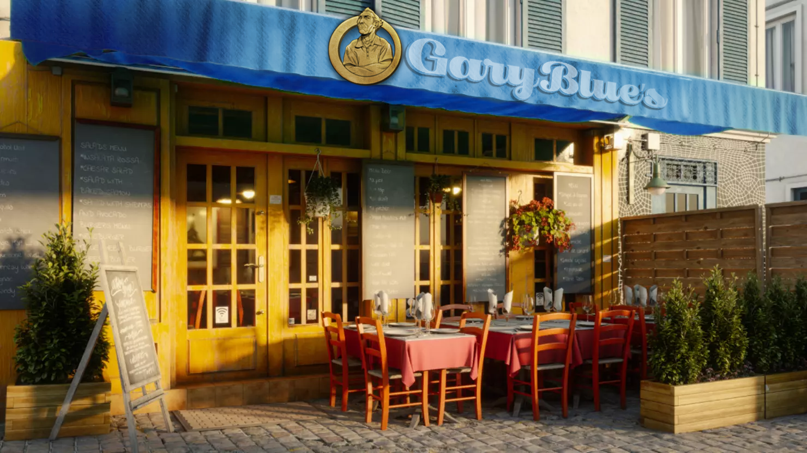
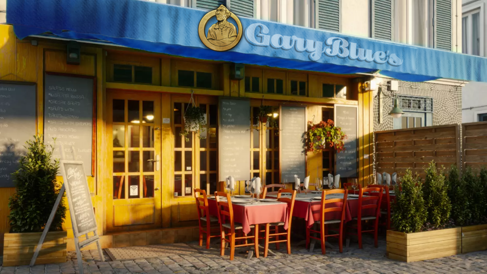

Welcome
Gary Blue's Diner, a home to family, friends, laughs and the Big Gary Chicken Sandwich
About Gary Blue's
Gary Blue's, founded in 1998 by Sergeant Gary Blue, is a premium fried chicken restaurant and diner. With a secret recipe developed through Sergeant Blue's experiences in combat operations, each succulent piece of fried chicken is infused with a harmonious blend of 94 herbs and spices. This unique recipe sets Gary Blue's apart as a beacon of flavor and tradition in the world of fried chicken.
Gary Blue's exudes a nostalgic charm, welcoming patrons to indulge in a dining experience that transcends mere sustenance. Alongside the mouthwatering fried chicken, the menu boasts a selection of Southern-inspired classics and modern twists on comfort food favorites, always ensuring there's something for every palate. 
Gary Blue's exudes a nostalgic charm, welcoming patrons to indulge in a dining experience that transcends mere sustenance. Alongside the mouthwatering fried chicken, the menu boasts a selection of Southern-inspired classics and modern twists on comfort food favorites, always ensuring there's something for every palate. 
{kind=link}
Restaurant Info
Location:
98 Mainsail Road
Hours of Operation:
Mon - Fri: 6am - 9pm
Sat: 8am - 10pm
Sun: 12pm - 6pm
98 Mainsail Road
Hours of Operation:
Mon - Fri: 6am - 9pm
Sat: 8am - 10pm
Sun: 12pm - 6pm